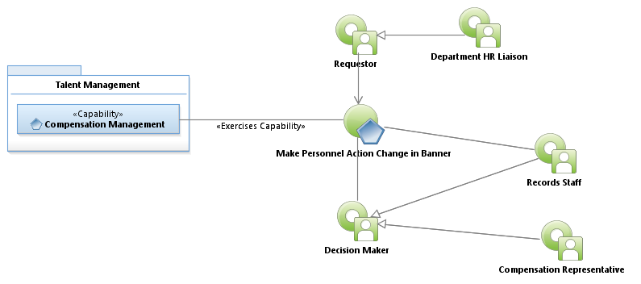

Activity Model: Make Personnel Action Change in Banner

Use Case Model: Make Personnel Action Change in Banner
Architect: Aaron Brown, IT Enterprise Architect Senior
Date Last Modified: 03/18/2013
User Review: Linda Escamilla, Shelly Sheppard, Shannon Flett
Date: 03/18/2013
Effect a change to the Personnel Record within Banner of an employee. This process includes filing of paper documentation if the Personnel Action Form (PAF) is provided in hard copy. Electronic versions of the PAF can also be submitted in certain situations.
Follow link to Role Definitions

Use Case Model: Make Personnel Action Change in Banner
Activity Model: Make Personnel Action Change in Banner